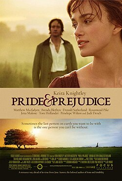

Baseado no clássico romance Orgulho e Preconceito, escrito por Jane Austen e publicado em 1813, o filme acompanha Elizabeth Bennet, uma jovem inteligente e espirituosa que enfrenta
as intensas pressões da sociedade inglesa do século XIX sobre o casamento. Quando o rico e reservado Sr. Darcy entra em sua vida, uma série de julgamentos precipitados e mal-entendidos
coloca os dois em conflito. Para que a implicância inicial dê lugar a um amor verdadeiro, ele precisa superar seu orgulho de classe e ela, o seu preconceito contra a atitude dele, enquanto
ambos navegam pelas rígidas convenções sociais de sua época.